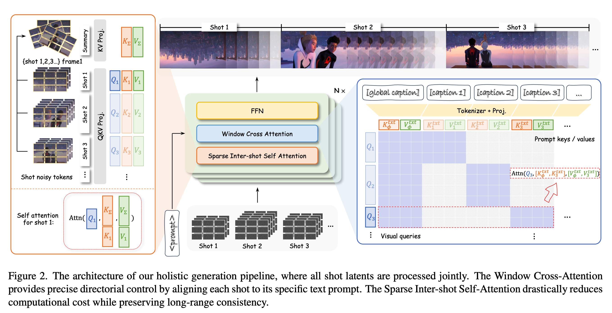
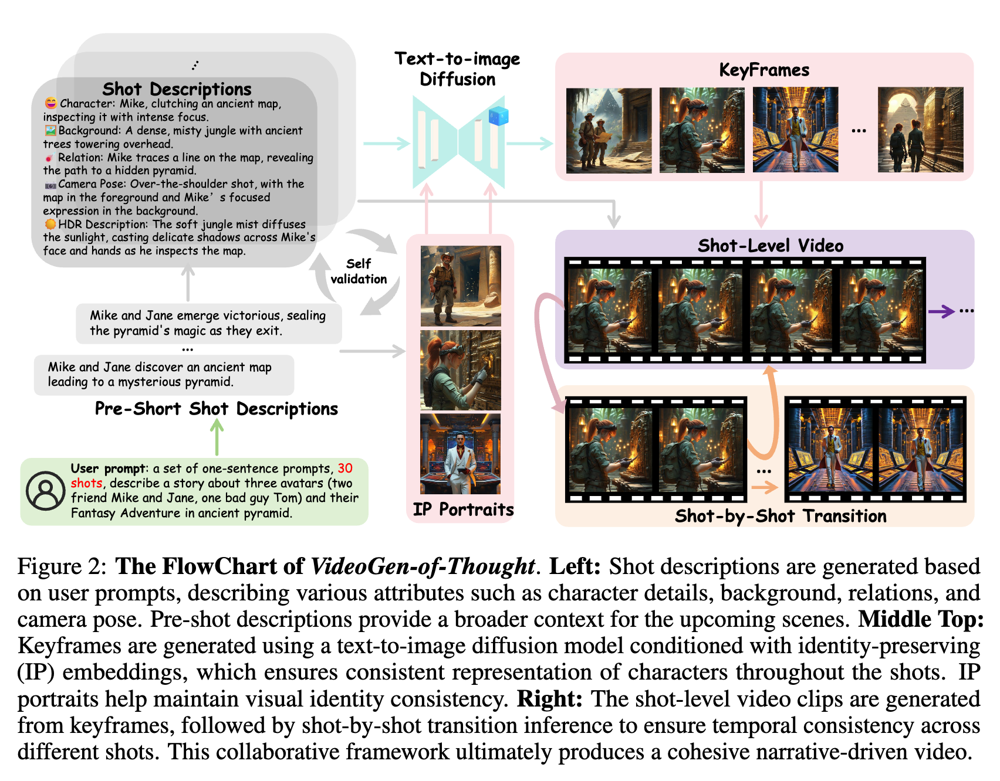
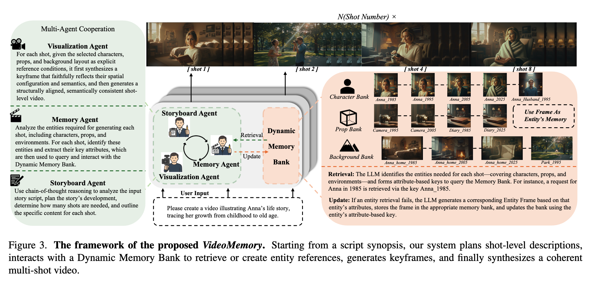

A good shot is only the beginning: change needs cinematic language; consistency must survive the cuts.
01 · Task boundary
Multi-shot: continuous narrative generation with explicit shot boundaries
Input
Global story / character setup + an ordered sequence of per-shot descriptions
Output
Multiple shots separated by hard cuts; viewpoint, composition, action, space, or time may change
SHOT 01WIDE · ESTABLISH SPACE
SHOT 02CLOSE-UP · EMPHASIZE EXPRESSION
SHOT 03REVERSE · SWITCH VIEWPOINT
≠ Long video
Long video emphasizes duration; multi-shot emphasizes shot boundaries and inter-shot dependencies.
≠ Multi-scene
A scene is a narrative unit of space and time; one scene may contain multiple shots.
≠ Story video
This review is limited to video methods that explicitly model shot boundaries and shot-level dependencies.
Central challenge: consistency Not every shot should look alike: preserve what should persist, and change what should change.
02 · Unified framework
Four method families—and four parts of this review
The first three ask how shots are generated and how history enters the video model; the fourth examines planning, inspection, and correction outside the model.
PART I · 04–10
Holistic Joint
One bidirectional model jointly generates all shots in a single call.
all shots ↔ all shots
PART II · 11–16
Shot-Level AR
The model is called repeatedly, producing one complete shot per round.
shotᵢ ← finished shots<ᵢ
PART III · 17–21
Causal Streaming
Causal rollout by frame or chunk, with bounded reusable state.
chunkᵢ ← causal state<ᵢ
PART IV · 22–27
System / Agent
Plan, manage references, inspect, and retry outside the model.
plan → render → inspect ↻
Key boundary: shot-AR with bidirectional within-shot diffusion is not causal streaming; systems are orthogonal to the first three families.
Synthesis · 28–30: trade-offs, the benchmark landscape, and discussion.
PART I
PART I
Holistic Joint Generation
All shots are denoised jointly and bidirectionally in a single call
Shot plancaptions · boundary · duration
→
Joint DiTall visual tokens ↔ all visual tokens
→
Multi-shot videono rollout error accumulation
Common interface Per-shot captions and boundaries are usually specified before inference.
Core problem Caption–shot alignment.
Main costs Total token scaling, a complete script, and recomputation for local edits.
PART I · TIMELINE
04 · Evolution
From alignment primitives to long-form and directorial control
2024.12
Temporally grounded event control
MinTCVPR 2025event captions aligned to one joint video
Uses a visual block-diagonal mask only in selected DiT layers: masked layers reinforce hard cuts, while unmasked layers continue to transmit global information across shots.
Global–Local Shot-Aware Mask: character, story, and transition text are visible to all shots; cinematography and camera descriptions are visible only to their designated shot.
Inference interface Masks encode boundaries directly, but cut positions must still be specified in advance.
ALIGNMENT II
Caption–shot alignment
Specialized RoPE: rewrite positional geometry without blocking attention
K shots correspond to K−1 Transition Tokens. The count merely reflects the interface; the key is how TTs and local masks divide responsibilities.
Where is the boundary? Duration plus a local mask determines the interval controlled by each caption.
What does the boundary do? A Transition Token reinforces the learnable signal to “perform a cut here.”
Key ablation: removing TTs while retaining the local mask still produces multi-shot video.
TT is a control handle, not the sole source of multi-shot behavior; training still relies mainly on manually concatenated 2–3-shot clips.
KEY PAPER
Scaling the joint context
HoloCineCVPR 2026: extending Holistic Joint generation to longer durations
≈60s
training coverage
Data are grouped at approximately 5 / 15 / 60 seconds; the longest training samples contain up to roughly 13 shots. This is not a hard inference limit.
Sparse Inter-Shot Self-Attention
Dense attention is retained within each shot; across shots, only representative / summary tokens communicate bidirectionally, reducing the quadratic cost of the full sequence.
Window Cross-Attention continues to address per-shot prompt alignment, but it is not the principal advance over the preceding three slides.
Trade-off: it still requires a complete script and offline joint generation; sparse summaries may omit fine-grained long-range state.

PART I · TAKEAWAY
Beyond generation structure
The Joint route is evolving toward a directorial interface
Routes visuals and sound by shot boundary while binding character appearance, voiceprint, and role ID.
Trend: the marginal value of yet another mask or RoPE variant is shrinking; value is shifting toward camera, audio, reference, and planner–renderer alignment.
PART II
PART II
Shot-Level Autoregressive
Each diffusion sampling call generates one complete shot
History shotsfixed visual evidence
→
Select / compressframes · entities · tokens
→
Denoise shotᵢwithin-shot bidirectional
→
Write memoryappend / update
vs. holistic The past is fixed and cannot be revised by the future.
vs. causal A full bidirectional DiT can still be used within each shot.
Boundary capabilities through context-causal or conditional extension modes.
joint model + causal mode
Trend: memory is organized by entity / state rather than frame, while update strategies move from unbounded accumulation to fixed budgets and auxiliary verification.
PART III
PART III
Causal Streaming
Causal rollout by frame / chunk, generating and emitting output incrementally
Promptᵢcan arrive at runtime
→
Causal chunkᵢcannot revise the past
→
Bounded stateKV / latent / anchor frames
↻
Online operation Receive prompts shot by shot and emit output as early as possible.
History reuse Use reusable or bounded cache / state.
Strict boundary Generating one complete shot per call is insufficient.
TECHNICAL CONTEXT
One-slide prehistory
Multi-shot streaming builds on causal video distillation
CausVidblock-causal architecture
→
Self Forcing / AAPTtrain on self-generated history
→
Rolling Forcing / LongLivelong-horizon rollout
→
Causal Forcingfew-step causal distillation
For equations, training stages, and the technical evolution of forcing methods, see the group presentation below.
ShotStreamarXiv · 2026.03: distilling a bidirectional next-shot teacher into a real-time causal student
① Next-shot teacher
Sparse historical frames + global / local captions Bidirectionally denoise one complete target shot
→
② Teacher → student
DMD distills the roughly 50-step teacher into a 4-step causal student
→
③ Streaming rollout
Append one shot at a time across shots Emit causal chunks within each shot
Dual cache
Global
Sparse cross-shot frames
+
Local
Recent chunks in the current shot
→
next chunk
RoPE discontinuity
Introduces a positional phase discontinuity at each cut, preventing global cross-shot frames from being mistaken for consecutive preceding frames in the current shot.
Two-stage self-forcing
First adapts to the model's own chunk history within the current shot, then to historical shots generated by the model itself.
Core idea: first use a bidirectional model to learn “what the next shot should look like,” then transfer that capability to causal rollout with real-time output.
KEY PAPER
Native causal prior
CausalCinearXiv · 2026.05: learn a multi-shot causal prior before few-step real-time distillation
① Native causal prior
Real multi-shot long video Parallel teacher forcing
→
② Content-aware history
CAMR retrieves the portions of remote KV that are genuinely relevant to current content
Under a fixed KV budget, remote history is retained by content relevance, while recent history continues to support local continuity.
Difference from ShotStream: first train the generator itself as a native multi-shot causal base, then perform real-time distillation.
Speed is not the main contribution: FPS values across different backbones and hardware are not directly comparable; the focus here is the causal prior and history routing.
KEY PAPER
Runtime shot switching
LongLive 2.0arXiv · 2026.05: two reference-frame sets for successive shot transitions
Chunk-wise promptingthe prompt switch itself defines the scene cut
Gglobal sink
Gglobal sink
Arecent KV
Arecent KV
A → Bcut
S₂shot sink
Brecent KV
B → Ccut
S₃shot sink
Effective KV: global sink ∪ current shot sink ∪ recent sliding-window history.
Global sink
Permanently retains a small set of frames from the beginning of the video as a cross-shot identity anchor.
Shot-level sink
When the prompt changes, the opening of the new shot is rebound as a local anchor; earlier history and the global sink are not recomputed.
Direct multi-shot AR training
Each latent chunk is bound to independent text, directly learning clean-history → noisy-target on real multi-shot long videos.
This slide focuses only on multi-shot generation: the key elements are interactive chunk prompts and dual-scale sinks; NVFP4, parallelism, and asynchronous decoding are omitted.
PART IV
PART IV
System / Agent
Decide how to decompose, generate, inspect, and retry outside the video model
✍️
Decompose story
shots · assets · camera
→
🗂️
Manage references
character · prop · bg
→
🎬
Invoke generator
joint · shot-AR · causal
→
🔎
Inspect and retry
verify · repair · update
Stage 1 Plan in advance and generate unidirectionally.
Stage 2 Selection and state management during generation.
Shared limitation: however detailed the plan, actual generated results usually do not return to the planning module; the system largely executes the initial plan in one direction.
KEY PAPER
Training-free keyframe-first pipeline
ViGoTNeurIPS 2025 Workshop: a complete keyframe-first system baseline
GPT-4o 5-field per-shot script
↓
Portrait / IP embedding identity anchor
↓
Per-shot keyframes text-to-image
↓
DynamiCrafter I2V shot clips
↓
Adjacent latent transition
Critique: identity relies mainly on explicit references; memory for long-term action, prop state, and world state is weak.

KEY PAPER
Persistent external assets
VideoMemoryarXiv: maintain characters, props, and backgrounds separately
👤
Character bank
identity + age / costume state
🧳
Prop bank
object appearance + attributes
🏞️
Background bank
recurring environments
Storyboard Agent
→
retrieve / create
→
keyframe + I2V
→
update bank
Value: supports long-range entity recurrence and state changes within the story, instead of resampling appearance in every shot.
Boundary: it maintains reference information but does not inspect the rendered video, diagnose errors, or trigger local regeneration; it is therefore not yet a visual-feedback loop.

CLOSED LOOP
Generated frames become evidence
GroundShotarXiv · 2026.06: generate the shot best suited to serve as a reference first
🗓️
Schedule
choose best anchor shot
→
🎞️
Generate
create candidate frame / shot
→
✅
Verify
entity grounding quality
→
🧠
Write
reference memory
A genuine closed loop: generated results affect shot order, whether a reference is saved, subsequent prompts, and whether to retry.
Multi-shot audio-video; it does not directly cover every setting in video-only generation, online interaction, or agentic systems.
Conclusion: benchmarks are not absent; they are just beginning to take shape and have not yet become a shared de facto standard across all four routes.
DISCUSSION
Takeaways & open questions
From “shared pixel history” toward shared world state
01
Where is the architectural boundary?
When should holistic generation define the global quality ceiling, and when should causal rollout be used with periodic repair?
architecture
02
What should memory store?
Frames, latent patches, entity assets, or an updatable world state? How can prop and event state be verified rather than only character appearance?
representation
03
How should closed-loop systems be compared fairly?
If systems may use different numbers of candidates, API calls, and retries, how should quality, latency, and cost be combined into an interpretable evaluation?
evaluation
2025: bring multiple shots into one generative context. 2026: extend online, manage history, and bring visual results into the decision loop.
S Presenter View · ← → Navigate · F Fullscreen · O Overview · Hover dotted terms